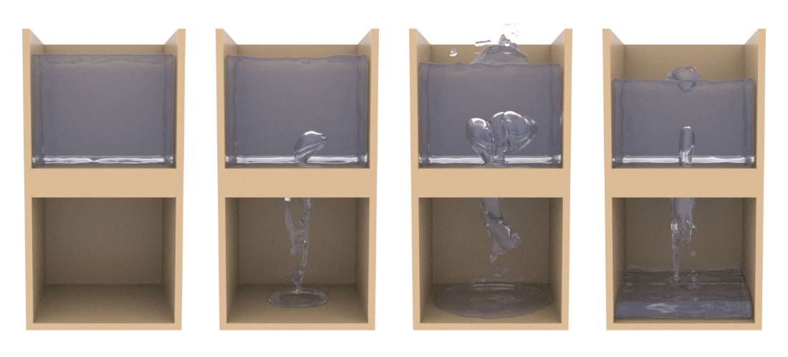

Rob Dennison
About Me
PhD student at The University of Sheffield, Visual Computing Research Group.
Blog
Back to all projects
Multiphase PIC Fluids
A multiphase fluid simulation using the affine particle-in-cell method (APIC), based on the MultiFLIP paper by Boyd and Bridson (link to paper here).
Demonstration Videos
A rendered view of water flowing through a small opening from one container to another. As the liquid falls through, air bubbles rise up through the liquid. Rendered using Houndini.
A rendered view of oil and water. The less dense oil begins the simulation underneath the higher density water. Since the liquids don't mix, they form a complex interface. The two then separate out again into layers, with the water resting underneath the oil. Rendered using Houdini.